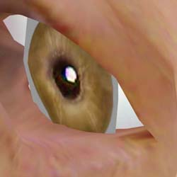
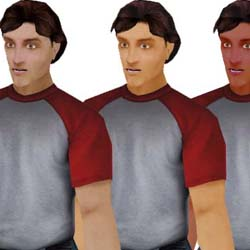
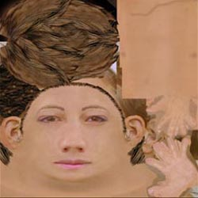
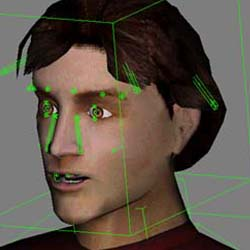

UDN
Search public documentation:
ModelingTableOfContents
Interested in the Unreal Engine?
Visit the Unreal Technology site.
Looking for jobs and company info?
Check out the Epic games site.
Questions about support via UDN?
Contact the UDN Staff
Modeling/Art Table of Contents
Document Summary: A table of contents for tutorials on creating skeletal mesh art assets for Unreal Ed. Document Changelog: Original author was Tom Lin (DemiurgeStudios?).Start Here.
This document is a guide to all the docs related to getting artwork into the Unreal Engine, from static meshes to textures to animations. Note that this document does not cover level creation. The guides are arranged beginning with modeling and ending with exporting to a file format that Unreal can import. To Jump to a section, click on the following links: ModelingTexturing
Rigging and Animation
Exporting
Modeling

This section includes information on how to efficiently model for the Unreal engine. It also contains useful information about Unreal-specific quirks, such as smoothing, refpose, etc. UnrealModeling- Smooth Skinned Models
- Articulation
- Eyes
- Eyelids
- Tongue
- Refpose
- Smoothing Groups
- In-Game Perspective
- Unreal-Engine Specific Tips
- Clipping
- Single Sided Polys
- Holes
- Comparing Detail Levels
Example Models

This document contains information about two mid poly models created for the Unreal Engine. The document details the creation of these models, explains why design decisions were made, and links to .zip files that contain all of the models, textures, animations, .PSK/.PSA files, etc. UnrealDemoModels- Modeling
- Eye
- Hands
- Feet
- Mapping/Texturing
- Crossing Alpha Triangles
- Texture Size/Number
- Swapping Skins
- Bones/Enveloping
- Reusing Models/Skeletons
- Using the UDN Model
- Using the UDN Skeleton
Texturing

This doc includes information on the range of texture formats that Unreal will accept, as well as when how best to use them. Links to tools that can be used to create certain formats are also included. UnrealTexturing- Powers of 2
- Texture Formats
- 32 bit RGBA (TGA)
- DirectX Texture Compression
- 8 Bit Palettized
- 8 Bit Palettized with Alpha
- DXTC Tools
- Nvidia DXT Compression Tools
- Microsoft DXTex Tool
- Bright
- Alpha Channels
- Appropriate Texture Sizes
- Clothing/Skin Swapping
- 2K3 Team Colors
Rigging/Animation

This document contains general information about setting up a skeleton in your finished models, with specific information dealing with correct initialization and Unreal capabilities. SkeletalSetup- Designing a Skeleton
- Wasted Bones
- Shoulders/Elbows
- Neck
- Highly Articulated Face
- Optimizing Your Mesh
- Initializing Physique
- Misc Info
- Skeletons without Biped
- Adding Bones to Biped
- Rigid Mesh Linking
- Unlinking Meshes from Physique
- Null Vertex Weight
- Blending Animations
- Bone Attachments
- Animation Notifications
- UDN Skeltons vs UT2K3 Skeletons
UnrealVertexAnimation
You may want to consider using Impersonator for lip synch on your models. To get started, take a look at these documents. ImpersonatorHeadRigging
ImpersonatorTutorial
ImpersonatorUserGuide
Karma Physics (Ragdoll) is also an option in the Unreal Engine. For a thorough description and explanation, see these docs. KarmaReference
ImportingKarmaActors
UsingKarmaActors
KarmaAuthoringTool
RagdollsInUT2003
KarmaExampleUT2003
ExampleMapsKarmaColosseum